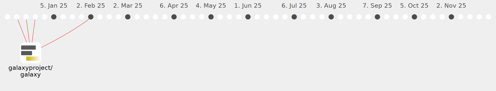

KaiOnGitHub

Commits all-time: 69
Commits last year: 65

(65)
- 5b7a4f0
- 1226a80
- b12edd4
- 2f2c532
- 5eea367
- 9dfc737
- ba446c2
- efeab3c
- 097a6da
- 398435c
- 9df13b0
- 1bb2373
- 4a616d2
- a23582f
- bd6c795
- 3f3900e
- 9ad0c50
- 59e8737
- 75492c9
- 47747fe
- d08e1b9
- d6bb1f4
- d041fcf
- 9b5bb2c
- e7080d2
- b506c93
- 97c0934
- 84bd480
- 7108e94
- f92a355
- 3b274bf
- a481462
- 6d05de2
- 5330280
- 507cf78
- ca566f2
- a574820
- 7a77c3d
- e27fa5e
- c86508f
- 61fcb87
- c11054d
- f4285a9
- c0501c5
- d0cb3a5
- 4fa0c82
- 73d8b87
- e1c7e6c
- 36164b9
- 56deafb
- 7627bad
- 49b5385
- 6eb1c18
- 1e34d7c
- 4bc7eb6
- 79e6fa0
- 248462b
- 545a739
- 28fa89f
- 276b905
- ad3a87b
- 4552a33
- fc78fc1
- 11c3324
- 60e0b72